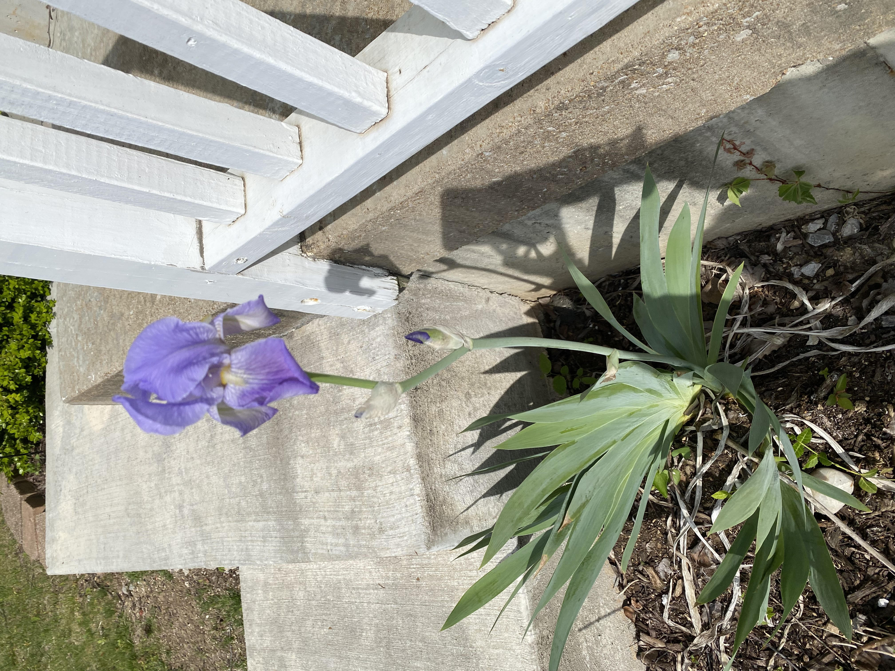
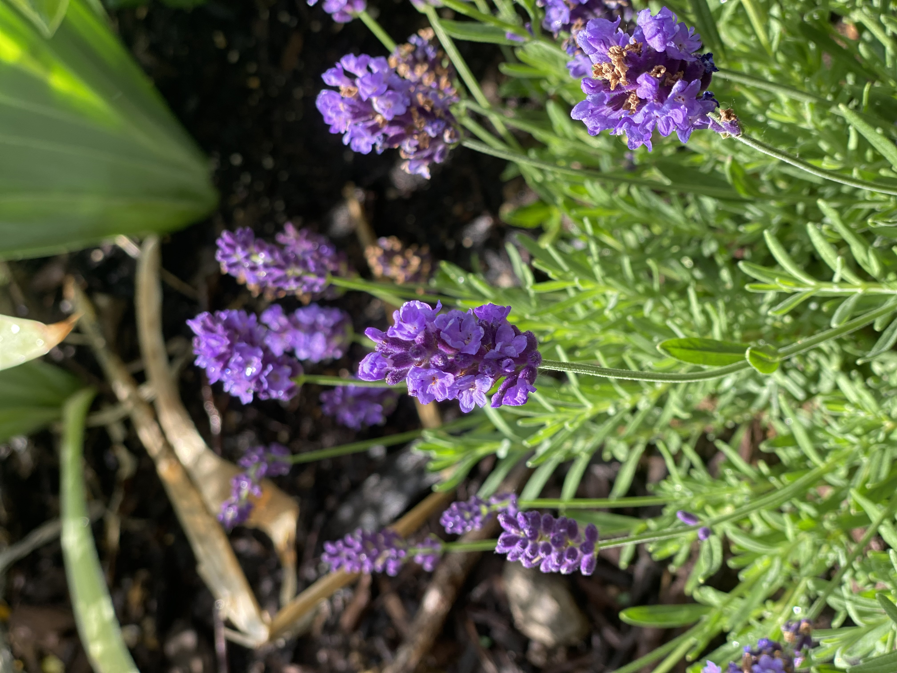
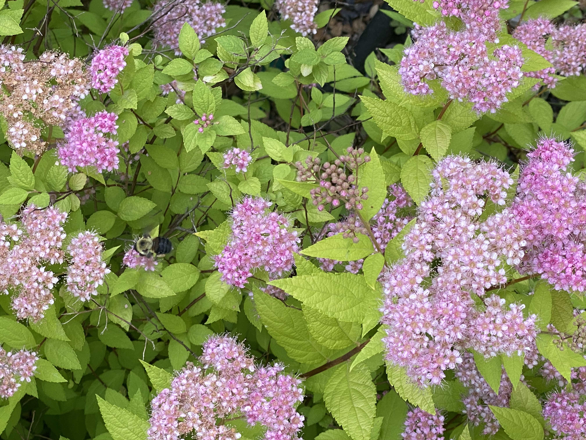

My Outdoor Hobby
I have many hobbies, but one of my only outdoor hobbies is gardening. I don't do well in the summer heat, so my other outdoor hobbies, hiking and walking, have to be put on the back burner. I started gardening this summer in 2023 because I needed to get outside before and after work, but didn't want to have to travel to do it. While I am currently planting flowers, eventually I would like to plant fruits, vegetables and spices. Unfortunately, I have two dogs who love to eat any food they can get their mouths on, so growing those will have to wait.
My Front Yard
Thankfully, the people who lived here before me had started the gardens, but they were not maintained for the last few years. To start, I planted some new lavender in my front yard, and have focused on watering the flowers that were already planted in the morning and at night. The flowers I have growing are hydrangeas, coneflowers, and crocus'. Additionally, there are bushes and small trees that I have not yet identified.
My Backyard
In the back corner of my yard, there is a walled off section that has been neglected. There is a small fence running along it to keep my aforementioned dogs out (not that it works incredibly well). I have begun the process of clearing everything out, but unfortunately even after work it has been too hot for me to work on. I am currently trying to plan what will be planted so it might be able to grow this fall or next spring. My goal is to have a garden that I can consistently work on that also helps my local wildlife & pollinators.
